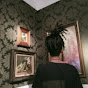
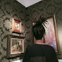

Devotion trap deck. Lack of oneiromancy really hurts sometimes but if we have no targets for cargos, Eldain can transform them. Round 1 plan is to bamboozle the opponent with either horn, crushing or serpent and gain up to 2 card advantage. If you won the round even cards just go for long round 3 unless its an annoying deck like cultists. If you won round 1 card up just push round 2 to the limits. Round 3 plan is replay that Iorveth on pitfall to its limits and have a huge hostage taker. If Iorveth dies we still got hostage taker and Eldain to transform the cargos. This deck suprises me everytime i play it. I think it counters the current meta. I rarely lost and thats because i drew bad.
 

0 comentários